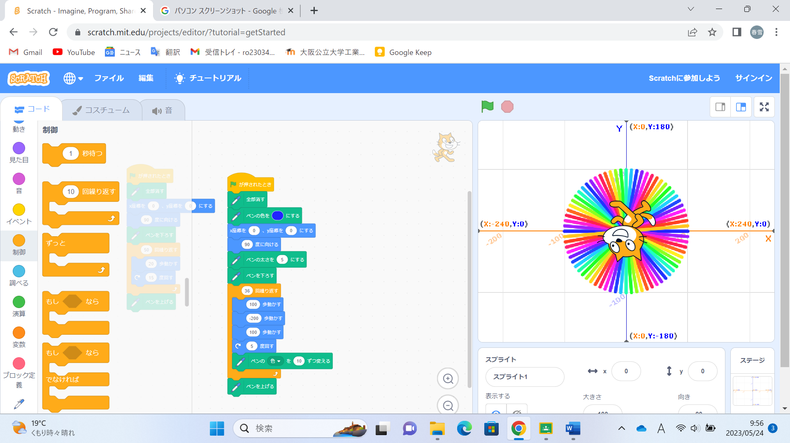
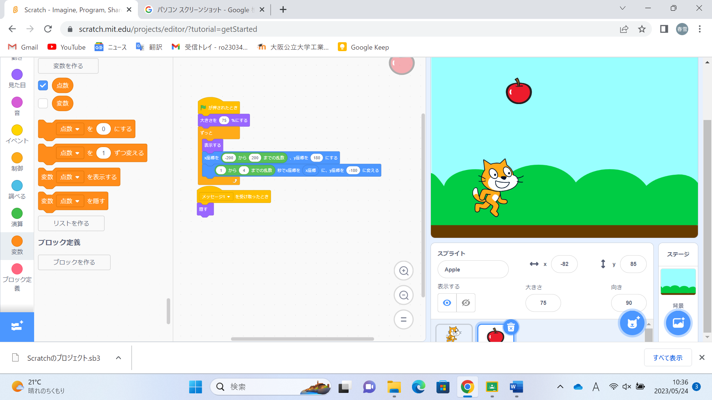

1週目のレポート ： 公大高専１年実習I-1
3a班10番 金子春雪
第1週目
1-1 サイエンスアート

1.内容
スクラッチを使って線を書くプログラムを作成した。このプログラムは
2.感想
E1でもmake codeを使ってブロックプログラミングをしたため、scratchでも大きな問題なくプログラムを作成することができた。やはり、手で触れることのできないものでも、自分が作ったものが実際に動くことに感動した。
1-2 ゲーム

1.内容
落ちてきたリンゴを猫を移動させてキャッチするゲームを製作した。
2.感想
一つ一つの工程は何をしていたのかわからないことも多かったが、どこが間違えてうまく動作しないのかを考えて修正することが楽しかった。完成したときは達成感があった。
1-3 ホームページ作成
私のホームページ
1.内容
自分で自分のホームページを作成した。
2.感想
どの動作がホームページにどう影響するのか最初は全く理解できなかったが友達に教えてもらう中で少しづつ理解することができるようになり、授業終わりにはgithubでのホームページの作り方を理解することができた。